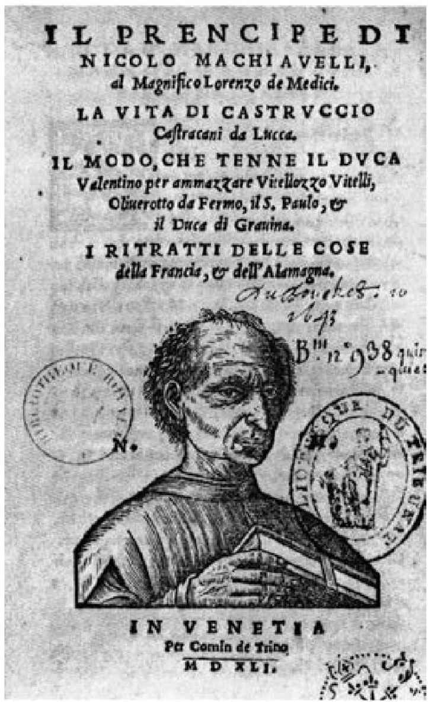
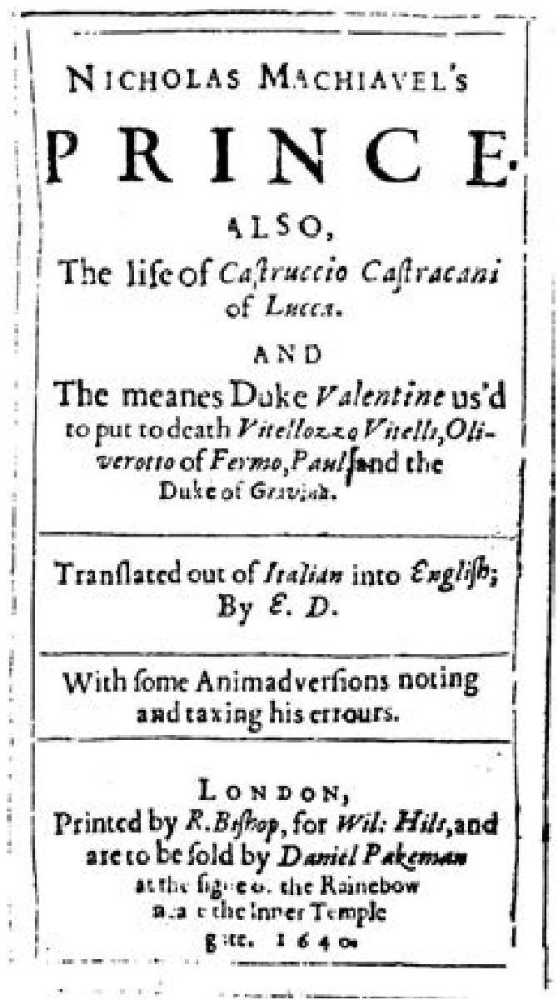

1513年初，美第奇家族取得了最辉煌的胜利。2月22日，得知尤利乌斯二世的死讯后，红衣主教乔瓦尼·德·美第奇动身前往罗马，3月11日红衣主教会议推选他为新教皇，名号为利奥十世。从一个角度看，这让马基雅维里的希望再次遭受打击，因为它为佛罗伦萨的新政权赢得了史无前例的凝聚力。乔瓦尼是第一位出任教皇的佛罗伦萨人，根据当时著名日记作家卢卡·兰杜奇的记载，全城举行篝火晚会和烟花表演，欢庆持续近一星期。但从另一个角度看，这也为马基雅维里带来了意料之外的好运：为了表示庆祝，政府宣布大赦，他也在释放之列。 [22]
刚一出狱，马基雅维里便开始盘算，如何向城市的新统治者推销自己。他以前的同事弗朗切斯科·韦托里已被任命为驻罗马大使，马基雅维里不断给他写信，催促他四处游说，“好让我从教皇大人那里获得一官半职”（《书信集》244页）。然而，他很快意识到，韦托里派不上用场，或者可能不愿帮忙。马基雅维里万分沮丧，退居自己在圣安德里亚的小农场，只为（他在给韦托里的信中如是说）“避开所有人的脸”（《书信集》516页）。正是在那里，他第一次更多地从分析者而不是参与者的角度开始思考政治。最初，他的想法都表达在给韦托里的长信中，滔滔不绝地论述了法国和西班牙重新干预意大利的政治含义。后来，为了打发被迫赋闲的时光（如他在12月10日的信中所说），他开始系统地总结自己的外交经验、历史的教训和治国术的原则。
马基雅维里在同一封信中抱怨，他只能住“一间破房子”，靠“一小笔遗产”过活。但他学会了苦中作乐，每晚回到书房，阅读古代历史，“进入古代宫廷，和古人会面”，“与他们交谈，询问他们行动的理由”。在“研究统治的艺术”时，他也在反复思索“15年来”形成的那些观点。他说，最后的结果“是一部小书《论君主国》，在这个话题上我已穷尽自己所能到达的深度”。这部“小书”也就是马基雅维里的杰作《君主论》，根据这封信的说法，它是在1513年下半年撰写的，在圣诞节前完成（《书信集》303—305页）。 [23]
马基雅维里向韦托里透露，自己最期望的效果是用这本书引起“我们的美第奇官长们”的注意（《书信集》305页）。他以这种方式自荐——正如《君主论》的献词部分所说——是急于以忠实臣民的身份向美第奇家族“表明心迹”（3页）。在这方面的焦虑情绪甚至损害了他在论述时一贯保持的客观标准。在《君主论》第二十章，他激动地宣称，新统治者会发现，“在他们统治初期曾猜忌过的那些人反而比他们最初重用的人更可靠，更有用”（74页）。这一观点在后来的《论李维罗马史前十卷》中被他自己断然否定（236页）。显而易见，此处马基雅维里的分析掺杂了某种申辩的味道，他甚至一再声明，“我必须提醒所有的统治者”，“安于前政权统治”的人永远比其他人“更有用”（74—75页）。

图2 威尼斯早期出版的数版《君主论》之一的扉页。
然而，马基雅维里最关心的当然是让美第奇家族明白，他是值得起用的，是一位不容错过的治国专才。他在献词中称，“若要正确理解统治者的含义”，就必须“做熟谙民众心理的人”（4页）。他以惯常的自信口吻补充说，他的政治见解很可能具有非凡的价值，这有两个原因。首先他强调了自己“在现代事务方面的长期经验”，这是他“多年来”用“无数艰险”换来的。然后他自豪地指出，在此期间他“坚持不懈地研究古代史”，“专注细致”地探求这个不可或缺的智慧之源，已经掌握了治国术的理论精髓（3页）。
那么，马基雅维里究竟从他的阅读和实践中发现了什么秘诀，可以教给天下的君主，尤其是美第奇家族呢？任何人刚打开《君主论》时，都会觉得这不过是本枯燥的书，它不厌其烦地列举了君主国（principal ity）的类型以及“夺取和维持政权的方式”（42页）。在书的第一章，马基雅维里以“国”（dominion）的概念为主题，提出国只有两种——“共和国和君主国”。他立刻撇下了共和国这一类别，声称自己暂时只讨论君主国。然后他又把君主国分为继承国与新建国两类，这也并非什么高明的见解。接下来他又将继承国抛在一边，因为继承国的统治者面临的困难较少，无须自己提供建议。在谈到新建国时，他又区分了“完全新建”和“被统治者吞并、像肢体一样与继承国连接”的两类国家（5—6页）。他对后一类不太热心，在用三章篇幅分析所谓“混合君主国” [24] 之后，他从第六章开始，集中讨论显然最令他痴迷的话题：“完全新建的君主国”（19页）。在这个节点上，他对内容又做了进一步的区分，与此同时引入了或许是他的整个政治理论中最重要的对立项，也是《君主论》逻辑的轴心。他断言，建立和维系君主国或者需要“依凭自己的军队和德性”，或者需要“借助他人的力量和时运”（19、22页）。
论及最后这组对立项时，马基雅维里仍然对第一项不太感兴趣。他承认依凭“自己的德性而非时运”崛起的人都是“最杰出”的领袖，并举出“摩西、居鲁士、罗慕路斯、忒修斯和其他此类人物”为例。但他在同时代的意大利找不到这样的典范（或许弗朗切斯科·斯福尔扎 [25] 是唯一的例外）。马基雅维里似乎暗示，在朽败的现代世界里，传说中的“德性”大约已无迹可寻了（20页）。因此，他关注的是借助时运和外国军队建立的君主国，这类例子在现代的意大利就比比皆是了。最有启发意义的是“靠父亲的时运登上高位”的切萨雷·博尔贾，对于所有“通过时运和别人的军队获得权力”的人来说，他的政治生涯都“值得效法”（28页）。
上述论点标志着马基雅维里的逐级分类已经结束，他开始专心讨论自己最关心的一类君主国。读到这里我们也已清楚，尽管他竭力维持假象，仿佛所有分类完全不带感情色彩，其实却有一个狡猾的设计，刻意突出某一类君主国，而他这么做，是有地域原因和个人原因的。他声称，亟需专家建议的情形是统治者借助时运和外国军队上台。《君主论》的当代读者都不会忘记，马基雅维里抛出这一论点的时候，美第奇家族刚刚恢复了他们在佛罗伦萨的统治，他们依靠的正是出乎意料的好运和西班牙国王费迪南德势不可挡的军队。当然，这并不意味着马基雅维里的见解没有任何普遍意义，无须重视。但这本书给人的印象的确是，他希望当时的读者集中关注一个时间、一个地点。这个地点就是佛罗伦萨，这个时间就是《君主论》成书的时间。
当马基雅维里和同时代人觉得有必要思索时运在人类事务中的巨大力量时——例如在1512年，他们大都会转向古罗马的史家和道德论者，希望在古人那里找到对这位女神 [26] 性格的某种权威分析。这些古代作家的传统说法是，如果一位统治者是靠时运女神的干预获得权力，那么他首先要学习的功课便是敬畏她，即使她满载礼物而来。李维在《罗马史》第三十卷加入了一段影响深远的话来阐明此观点。他描绘的是汉尼拔最终向年轻的西庇阿投降的戏剧性时刻。汉尼拔在投降演说的开头以羡慕的语气评论道，自己的征服者是“一位从没被时运欺骗的人”，但这反而促使他冷峻地告诫人们，留意时运在人类事务中的位置。不仅“时运的力量巨大”，而且“最大的好运永远最不能信赖”。如果我们指望时运把我们送上高位，那么当她背弃我们的时候，我们只会跌落得“更加悲惨”，而她最后必然会这样做（XXX.30.12—30.23）。
然而，古罗马的道德论者从不认为时运是一种本质邪恶的力量。相反，他们把她看成一位善神（bona dea）和潜在的盟友，她的青睐值得争取。寻求她的友谊自然是因为她掌管着好运——所有人似乎都天生渴望的东西。人们对好运的描述各式各样：塞涅卡推崇名誉和财富，萨卢斯特更喜欢荣耀和权势。但大家普遍认为，时运的种种礼物中，最珍贵的是名誉和与之相伴的荣耀 [27] 。正如西塞罗在《论义务》中反复强调的那样，人的至福是“获得荣耀”，“提高个人的名誉和荣耀”，获得与自身能力相称的“真正荣耀”（II.9.31；II.12.42；II.14.48）。
那么，我们如何才能说服时运女神垂青于我们，将丰饶角 [28] 中的宝贝倾泻到我们而不是别人身上呢？答案是，尽管时运是一位女神，她仍是一位女人，既然她是女人，就最容易被vir——真正阳刚的男人——吸引。因此，人们认为她尤其喜爱奖赏的一个特质是勇武。例如李维就曾多次引用“时运偏爱勇者”的格言。但她最仰慕的特质是“德性”（virtus），也就是真正阳刚男人的属性。这个信念背后的思想在西塞罗《图斯库兰论说集》 [29] 中体现得非常清楚，他明确提出，真正男人的标志就是拥有最高程度的“德性”。李维在《罗马史》中充分探讨了这一论断的内涵。书中罗马人的每次胜利几乎都是用同样的逻辑解释的：时运喜欢追随甚至侍奉德性，并会降福于展示德性的人。
基督教取得统治地位后，这套古典的时运阐释被彻底推翻了。基督教的论证否定了时运可以受人影响这个关键前提，最有说服力的例子是波伊提乌的《哲学的安慰》。这位女神从此被描绘成“一种盲目的势力”，在分发礼物时毫无目的，不加任何区别。她不再是一位潜在的朋友，而是一股不知怜恤的力量；她的徽记不再是丰饶角，而是变动之轮，“像潮涨潮落一样”永无休止地转动（177—179页）。
人们对她本性的认识变了，她的意义也变了。由于她在实施奖赏时毫无标准，全然不关注人的功过，人们相信，她的价值在于提醒我们，时运的种种好处根本不值得追逐；按照波伊提乌的说法，对世俗名誉和荣耀的欲望“其实都是虚幻的”（221页）。因此，她的作用是指引我们避开荣耀之路，让我们把目光投向人间牢狱之外，寻找我们天上的家。但这也意味着，虽然她专横无常，其实却是上帝的婢女（ancilla dei），仁慈神意的一个工具。因为上帝救赎计划的一部分就是向我们显明，“幸福不在于尘世生活中的偶然之物”，这样我们才能“鄙视世俗事务，因为对天国的眷恋而乐于摆脱物质的羁绊”（197、221页）。波伊提乌得出结论：正是为了这个缘故，上帝才将尘世福禄的分配交给混乱的时运。他的用意是让我们明白，“财富不能带来满足，王位不能带来权力，职司不能带来尊重，荣耀不能带来名声”（263页）。
波伊提乌化解了时运和神意的对立，对意大利文学产生了持久影响。但丁《地狱篇》第七章和彼得拉克《两种时运的药方》中都能发现其痕迹。然而，随着文艺复兴的深入，古典价值观得到恢复，将时运视为上帝婢女的观点受到质疑，人们重新遵循更早的看法，认为必须区分时运（Fortune）和命运（fate）。
产生这一变化，是由于当时对人类所特有的“卓越和尊严”有了新的理解。传统认为，上述属性源于人拥有不朽的灵魂，但彼得拉克的后继者们却越来越倾向于把问题的重心转到自由意志上。然而，他们感觉时运不受人左右的观念威胁到了人的自由。于是，一个相应的趋势出现了，它否认时运仅仅是神意的工具。一个突出的例子是，皮科·德拉·米兰多拉抨击了占星术这门所谓的科学，声称它基于一个错误的假设——我们的时运在出生那一刻就已经被星座无可更改地分给我们了。在稍后的文学中，我们发现作家普遍诉诸一种更积极的时运观，例如莎士比亚戏剧中，卡修斯就对布鲁图斯说，如果我们没能建立期待的功业，过错一定“不在我们的星座，而在我们自己” [30] 。
以这样一种对待自由的新态度为基础，15世纪意大利的人文主义者成功地恢复了古典著作中时运女神在人类事务中的丰满形象。这在莱昂·巴蒂斯塔·阿尔贝蒂的《论家庭》和乔瓦尼·蓬塔诺的《论时运》中都有体现，最有代表性的例子是埃涅阿斯·西尔维乌斯·皮科洛米尼于1444年撰写的小册子《时运女神之梦》。作者梦见自己在指引下游历时运女神的王国，并且见到了女神，她同意回答他的提问。她承认自己行使权力时固执任性。当他问“你会善待人们多久”时，她答道：“无论对谁，都不会太久。”但她远非对人的优劣毫不在意，听到“有些技艺可以帮助人们获得你宠爱”的说法，她并没否认。最后，作者问她尤其喜欢和讨厌什么品质，她答道，“缺乏勇气的人最让我憎恶”，这让人联想起“时运偏爱勇者”的观念 [31] 。
在《君主论》倒数第二章讨论“时运在人类事务中的力量”时，马基雅维里对这个关键话题的处理表明，他是人文主义态度的典型代表。在该章开头，他引用了人们普遍相信的说法——人“被时运和上帝统治”，指出这种观念显然意味着，面对世界的变迁“我们无计可施”，因为一切都已被神意预定（84页）。针对这些基督教的信条，他立刻抛出了一套关于自由的古典式分析。他承认，人类的自由当然很不完整，因为时运女神的力量太强大，“或许支配了我们一半的行动”。但他坚称，如果相信我们的命运完全受她摆布，就会“消灭人类的自由”。由于他坚决赞同人文主义的观点——“上帝不愿凡事都亲自处理，以免剥夺我们的自由和属于我们的荣耀”，他自然的结论是，我们的行动大约有一半在自己的真实掌控中，而不是被时运支配（84—85页、89页）。
为了阐明人是自身命运的主宰这个想法，马基雅维里仍然采用了源于古典时代的意象。他强调“时运是一位女人”，自然会被男人阳刚的品质打动（87页）。所以，他相信人的确可能将时运女神变为自己的盟友，学会与她的力量协调行动，抑制她反复无常的本性，这样在所有的事务中都能立于不败之地。
这样的思路将马基雅维里引向了古罗马道德论者最初提出的那个关键问题。我们如何才能与时运女神结盟，如何引诱她赐福于我们？他的回答与古人没什么不同。他强调她是勇者的朋友，喜欢“谨慎不足、冒险有余”的人。他提出的看法是，最能让她兴奋并采取行动的品质是阳刚男性的德性。他先从反面落笔，称缺乏德性尤其令女神愤怒和憎恶。正如拥有德性就像筑起了抵挡她汹涌洪水的大堤，她的怒潮也总向“没有任何堤防”的人奔腾而去。马基雅维里甚至提出，她只在拥有德性的人无力抵抗她时才施展自己的大能，这意味着她对这个品质如此钦慕，永远不会对显示出德性的人发泄她致命的敌意（85、87页）。
马基雅维里不仅重复了这些古典的论述，而且给它们添加了一点罕见的情色味道。他暗示，时运女神甚至可能有些乖戾，渴望人们狂暴地对待自己。他不仅声称，“时运是一位女人，如果你想控制她，就必须对她粗暴些”，还说她事实上“更愿屈服于敢于侵犯她的人”（87页）。
人们可以如此占时运女神的便宜，这种观点有时被视为马基雅维里的专利。但即使在这里，他的灵感也来自一系列现成的熟悉意象。塞涅卡早就强调过，必须用暴力对抗时运女神，皮科洛米尼在《时运女神之梦》中甚至已经开掘过这种观念的情色意蕴。当他问女神“谁能和你相伴最久”时，她承认，最吸引她的是“最激烈地抵抗她、让她的大能无法施展的人”。他最后提出一个大胆的问题：“生者中谁最合你的意？”她告诉他，自己鄙视“见了我就逃跑的人”，而“把我赶跑的人”却能激发她的欲望。 [32]
如果人能扼制时运的负面作用，从而实现他们的最高目标，下一个问题便是新建立政权的君主该为自己设立什么目标。马基雅维里从最低条件开始论述，这个短语在《君主论》中反复出现。最基本的目标必定是维持政权，他的意思是新君主必须守住原来的局面，尤其是控制好主要的管理体系。然而生存之外，还应追求更高的目标。从他的具体阐述可以看出，马基雅维里是古罗马史家和道德论者的真正传人。他相信，所有人最希望获取的是时运女神的宝物。因此，他完全忽略了正统的基督教律令（例如圣托马斯·阿奎那在《君主统治》中就强调了这一点），那就是好的统治者应当拒绝尘世荣耀和财富的诱惑，以确保获得天国的奖赏。相反，马基雅维里认为，显而易见，人注定要竞逐的最高奖赏正是“荣耀和财富”——时运女神所能赐予的最美妙的两件礼物（85页）。
然而，和罗马道德论者一样，马基雅维里也把获取财富视为庸俗的追求，宣称对“具远见和德性”的君主而言，最崇高的目标是创立一种“能给他带来名誉”、为他赢得荣耀的统治形式（87页）。他补充道，新君主甚至有机会获得“双重荣耀”：他们不仅可以创建新的君主国，而且能够用“好的法律、强大的军备、忠实的盟友和典范的行为”来巩固政权（83页）。这样，和李维、西塞罗一样，马基雅维里也把赢取现世的名誉和荣耀看成最高的目标。他在《君主论》末章设问：意大利的现状是否有利于新君主获得成功？他觉得这个问题可以转换成：具备德性的人是否能“将它塑造成一种为他赢得名誉的样式”（87页）。他在表达对西班牙国王费迪南德（同时代政治家中他最敬仰的一位）的钦佩之情时，给出的理由便是，费迪南德所成就的“伟业”已使他成为“整个基督教世界最著名、最荣耀的国王”（76页）。
马基雅维里认为，如果君主继承了一个“已经习惯本家族统治”的国家，实现这些目标（至少在最低程度上）并不特别困难（6页），但对新君主国的统治者来说任务就异常艰巨，如果他是借助好运登上高位的，难度就更大。这类政权“无法形成坚实的根基”，很容易在时运女神随意刮起的第一场风暴中就被吹得无影无踪（23页）。而且，他们不可以（更准确地说，绝对不能）相信时运会继续善待自己，那样做就是依靠人类事务中最不能依靠的力量。所以，在马基雅维里看来，下一个问题（也是最关键的问题）是：应当给新君主提供怎样的建议、规诫，一旦“在实践中熟练应用”，就能让他“仿佛磐石般稳固”（83页）？《君主论》剩下的部分主要就是回答这个问题。
马基雅维里给新君主的建议分为两大部分。他的第一个根本论点是，“所有国家的主要基础”都是“好的法律和好的军队”。而且，二者中好的军队更重要，因为“没有好的军队，就没有好的法律”，相反，“有好的军队，就一定有好的法律”（42—43页）。他以典型的夸张语气说，真谛就在于，明智的君主除了“研究战法战例”，“不应有其他的目标和兴趣”（51—52页）。
然后，他把军队分为两个基本类型：雇佣军和公民军。意大利各国几乎全部采用雇佣军，但马基雅维里在第十二章集中火力攻击了这一制度。“多年以来”，意大利人一直“被雇佣军控制”，后果令人震惊：整个半岛“被查理蹂躏，被路易洗劫，被费迪南德扫荡，被瑞士人羞辱” [33] （47页）。这样的结局完全在意料之中，因为所有的雇佣军都“百无一用，反添危险”。他们“彼此不和，各怀野心，军纪废弛，毫无忠信”，如果他们还没毁掉你，那只是暂时的，“一旦需要他们上阵，你就在劫难逃”（43页）。对马基雅维里而言，结论不言而喻，他在第十三章中极力主张，明智的君主永远“不要使用这种军队，而要组建自己的武装”。他甚至按捺不住加了一句荒谬的断语，说他们“宁可率领自己的军队承受失败，也不愿借助外国军队获取胜利”（49页）。
如此激愤的语气令人困惑，如果考虑到多数史家都认为雇佣军是一种有效的制度，就更需要解释一番了。一种可能是，马基雅维里在此处只不过遵循了某个文学传统。亚里士多德、李维和波里比阿都曾强调，为国从军是真正公民精神的体现，从莱奥纳尔多·布鲁尼师徒开始，佛罗伦萨的数代人文主义者都继承并发扬了这个观点。然而，即使在效法他最敬重的权威时，马基雅维里也极少如此亦步亦趋。更合理的解释是，虽然他是在普遍意义上攻击雇佣军制度，萦绕在他脑际的却是家乡的悲惨遭遇，在与比萨的长期战争中，雇佣军将领的确让佛罗伦萨蒙受了一系列的耻辱。不仅1500年的战役惨不忍睹，1505年的新攻势同样可悲：战斗刚打响，雇佣军的十位连长就在阵前哗变，不到一个星期，计划就流产了。
我们已经知道，1500年的灾难发生时，马基雅维里发现法国人对佛罗伦萨人冷嘲热讽，这让他深受刺激，鄙视的原因就在于军力太弱，甚至连比萨的叛乱都无法平复。1505年噩梦重演后，他决心采取行动，制订了一份用公民军取代佛罗伦萨雇佣军的详细方案。大议事会于同年12月暂时批准了提议，授权马基雅维里招募士兵。第二年2月他已准备好在市内举行首次阅兵游行，卢卡·兰杜奇观看了表演，大为叹服，在日记中写道：“大家认为，这是佛罗伦萨有史以来最好的仪式。” [34] 1506年夏，马基雅维里写了《论筹建步兵》 [35] ，强调“难以把希望寄托在外国的雇佣军身上”，佛罗伦萨应当“用自己的武器、自己的公民武装起来”（3页）。到了年末，大议事会终于被说服了，成立了一个新委员会——“公民军九人团”，马基雅维里任秘书，佛罗伦萨人文主义者最珍视的一个理想终于变成现实。
1512年，马基雅维里的公民军奉命守卫普拉托，却被进攻的西班牙步兵轻松击溃——我们或许以为，如此悲惨的表现会浇灭他的热情，然而，他对公民军的信心丝毫没有动摇。一年后，他仍在《君主论》篇末极力劝说美第奇家族，他们的“当务之急”就是建立佛罗伦萨自己的武装（90页）。1521年发表《战争的艺术》（他生前唯一出版的治国术著作）时，他还在重复同样的观点。整个第一卷都在反驳质疑公民军作用的人，极力维护“建立公民军的做法”（580页）。马基雅维里当然承认，这样的军队并非战无不胜，但他坚称，它比其他任何类型的武装都优越（585页）。他夸张地总结称，把一位质疑公民军想法的人称为智者完全是自相矛盾（583页）。
至此我们就明白了，马基雅维里为何觉得切萨雷·博尔贾是一位非凡的军事统帅，并且在《君主论》中断言，给新君主的最佳建议就是仿效这位公爵的行为（23页）。我们知道，公爵残酷地决定处死雇佣军首领，建立自己的军队时，马基雅维里正好在场。这个大胆的策略似乎对马基雅维里的思想产生了决定性的影响。在《君主论》第十三章刚谈到军事政策的时候，他就迫不及待地提到这个例子，并把它作为新君主应当采取的典范措施。他首先称赞博尔贾清楚地认识到雇佣军首领由于缺乏忠诚，是潜在的威胁，应当无情地除掉。马基雅维里甚至夸张地吹捧博尔贾，说他已经抓住了任何新君主若要维持政权都必须理解的基本道理：不再依靠时运和外国军队，招募自己的士兵，做“自己军队的绝对主宰”（25—26页、49页）。
军备和君主，这就是马基雅维里《君主论》的两大关键词。因此，他要让同时代的统治者明白的第二个道理是，希望登上荣耀顶峰的君主不但应有强大的军队，还必须培养君主领导术的恰当品质。关于这些品质的内涵，古罗马的道德论者曾做过影响深远的分析。他们首先指出，所有伟大的统治者必须在某种程度上是幸运的，因为除非时运女神保佑，单靠人的努力，我们是不可能实现最高目标的。但我们在前文谈到，他们也相信一些特定的品质（阳刚男人的品质）易于获取这位女神的眷顾，从而保证我们几乎没有悬念地赢得名誉、荣耀和声望。这种想法的逻辑在西塞罗的《图斯库兰论说集》中总结得最为精辟。他宣称，如果我们的行动是源于对德性的渴望，而不是赢得荣耀的盼望，那么只要时运女神庇佑，我们反而最可能赢得荣耀，因为荣耀就是德性的奖赏（I.38.91）。
这番分析被文艺复兴时期意大利的人文主义者原封不动地继承过来。到了15世纪末，从人文主义角度向君主建言的书已形成可观的规模，通过印刷术这个新媒介，其影响范围也远超前代。巴尔托洛梅奥·萨基、乔瓦尼·蓬塔诺和弗朗切斯科·帕特里齐等著名作者都写过指导新君主的著作，并且都基于同样的原则：拥有德性是君主成功的关键。蓬塔诺在论《君主论》的小册子中极其高调地宣称，任何统治者若想达到自己最崇高的目标，就“必须”在所有公共行为中“毫不懈怠地遵从德性的命令”。德性是“世界上最辉煌的东西”，甚至比太阳还灿烂，因为“盲人看不到太阳”，“却能清楚明白地看见德性”。 [36]
马基雅维里在论述德性、时运和如何实现君主目标时，完全沿用了上述观念。他第一次明确表达自己的人文主义立场是在《君主论》第六章，他提出，“在一个全新的君主国，新君主维持政权的难度”基本取决于他是否“具备一定的德性”（19页）。后来在第二十四章，他又强化了这个观点，该章的主旨是解释“意大利的统治者为何失去诸邦”（83页）。马基雅维里认为，他们遭受的羞辱不该归咎于时运，因为只有在有德性之人不愿抵抗她时“她才显示自己的威力”（84、85页）。他们的失败只能怪自己没能认识到，唯一“有效、可靠且持久”的防御必须建立在自己的德性之上（84页）。他在第二十六章（《君主论》末章以解放意大利的激情“呼吁”闻名）再次强调了德性的作用。马基雅维里在这里提到了那些因为“出众德性”被他在第六章称赞过的无与伦比的领袖——摩西、居鲁士和忒修斯（20页）。他暗示，只有将他们的惊人才能和最好的运气结合起来，才能拯救意大利。他以罕见的谄媚语气补充道，荣耀的美第奇家族幸运地拥有所有必备的条件：他们有非凡的德性，有时运女神的钟爱，而且受到了“上帝和教会的眷顾”（88页）。
常有人抱怨马基雅维里从未给出德性的定义，甚至用法也没有任何系统性。但现在我们可以看出，他是前后一致的。他追随了古典和人文主义的权威，将德性理解为这样一种品质：它帮助君主抵抗时运女神的打击，争取她的青睐，从而登上君主声名的顶峰，为自己赢得名誉和荣耀，为政权赢得安定。
然而，具备德性的人究竟有哪些具体的特征，仍然需要考虑。关于德性，古罗马道德论者留下了一套复杂的分析，按照通常的描述，具备真正德性的人拥有三组既独立又相关的品质。首先，他应当秉有四种“根本”美德：智慧、公义、勇气和节制。这些美德是西塞罗（继承柏拉图）在《论义务》的开篇单列出来的。但古罗马作者又添加了一些他们认为应当专属于君主的品质。最主要的一种（也是《论义务》中的核心美德）是西塞罗所称的“正直”，它意味着信守承诺，与所有人交往永远正大光明。此外，还有必要补充两种品质，《论义务》中已经提及，但详加阐述的是塞涅卡，他为每一种都单独写了著作。一种是与君主相称的“大度”（塞涅卡《论仁慈》的主题），另一种是“慷慨”（塞涅卡《论恩惠》的主题之一）。最后，具备德性的人还应具备一个特征，就是始终牢记，要想赢得名誉和荣耀，我们必须始终尽我们所能按照德性的要求行事。这个观点——符合道德的永远是理性的——是西塞罗《论义务》的灵魂。他在第二卷中指出，许多人相信“一件事可能符合道德，却不方便做；或者方便做，却不符合道德”。然而这是错觉，因为只有用符合道德的方法，我们才可能实现期望的目标。任何相反的表象都是欺骗性的，因为所谓“方便”永远不可能与道德要求发生冲突（II.3.9—3.10）。
为文艺复兴时期君主建言的作家们全盘继承了这套说辞。他们的基本假定是，德性总的概念应当涵盖全部“根本”美德和专属君主的美德，并且一边继续添加条目，一边不厌繁琐地细分。例如，在帕特里齐的《国王的教育》中，德性的顶级概念下竟层层罗列了君主应当培养的40种美德。然后，他们毫不犹豫地接受了古人的论点，相信君主应当采取的理性行动永远是符合道德的行动——他们的论证如此雄辩，最后“正直是最好的政策”几乎成了政治谚语。此外，他们还从基督教的特有立场出发，增加了一条反对将利益与道德割裂开来的理由。他们坚称，即使我们在此生通过不义手段获得了利益，在来生接受上帝的公义审判时，这些表面的好处也会被没收。
阅读马基雅维里同时代的道德论著，我们会发现这些论点被不厌其烦地重复。但当我们转向《君主论》时，却发现人文主义道德的这一面突然被粗暴地颠覆了。剧变在第十五章露出端倪，马基雅维里在开始讨论君主的美德与恶德时，淡定地警告读者，“我深知这个话题许多人都写过”，但“我要说的与别人的见解有所不同”（54页）。首先，他提到人文主义的老生常谈：有一些专属君主的美德，包括慷慨、仁慈、诚实，所有的统治者都有义务培养这些品质。接下来他承认（仍是正统的人文主义立场），如果君主能在任何时候都如此行事，“自然应当极力称颂”。但接下来他完全否定了人文主义的基本预设，那就是统治者若要实现自己的最高目标就必须拥有这些美德。人文主义者指导君主的这条金科玉律被他视为显而易见的、灾难性的错误。他对目标本身的性质自然没有异议：每位君主都要保住国家，并为自己争得荣耀。但他指出，若要实现这些目标，没有统治者能完全具备这些“公认为善”的品质，或者把它们全部贯彻到行动中。任何君主面对的真实情形都是在一个恶棍横行的黑暗世界里竭力保护自己的利益。在这样的条件下，如果“他不做人实际所做的，非要做应该做的”，就只会“削弱自己的权力，不可能维持它”（54页）。
在批判古典和当代的人文主义时，马基雅维里的论证并不复杂，却极具杀伤力。他提出，如果统治者意欲实现最高的目标，他会发现符合道德的并不总是符合理性；相反，他会意识到，持之以恒地培养所谓君主的美德其实是不理性的、灾难性的做法（62页）。但如何应对基督教的反驳呢？既然一切不义行为在末日审判时都会受到惩罚，如此置之不理难道不是既愚蠢又邪恶吗？马基雅维里对此一言不发。他的沉默胜过雄辩，甚至是划时代的。它像雷霆般在基督教的欧洲回响，起先大家惊愕无语，随后报以诅咒的号叫，余音今日不绝。
如果君主不应奉行传统的道德，他们该如何行动？马基雅维里的答案出现在第十五章开头，这是他对新君主提出的正面建议的核心。明智的君主考虑的第一原则是形势所迫：如果他“希望保持权力”，就应永远“准备在必要时做违反道德的事”（55页）。三章以后，他重申了这条基本教义。在条件允许时，明智的君主可以行善，但“如果时势不允许行善”，他“就必须有为恶的意愿和决心”。而且，他必须接受这个事实：“为了保持权力”，他经常都会由于形势所迫“做出奸诈、残忍和违背人性的事”（62页）。
我们已经知道，马基雅维里在外交生涯的早期就认识到了这一点的重要价值。1503年和1505年先后与沃尔泰拉红衣主教和潘多尔福·彼得鲁奇谈话后，马基雅维里便觉得有必要把这条后来成为他政治思想核心的意见记录下来：成功治国术的要诀在于承认时势的力量，接受形势所迫之事，让自己的行为与时代相适应。潘多尔福给他开出治国秘方的第二年，马基雅维里自己也首次提出了一套类似的看法。1506年9月他在佩鲁贾停留，在追踪尤利乌斯二世的倥偬战事之余，他在一封给朋友焦万·索代里尼的信中阐述政治和军事的成败原因。他写道：“自然赋予了每个人特殊的才能和灵感”，“人人都受它控制”。但是“时代各不相同”，而且“时时在变”，所以“凡是不能调整行事方式的人”都必然会“今日遭逢好运，明日遭遇厄运”。结论不言而喻：谁要想“永远享受好运”，就必须“有足够的智慧与时俱化”。如果人人都能如此“驾驭自己的天性”，让“行事方式与时代契合”，那么“智者就果真能够主宰星座和命运了”（73页）。
七年后，在创作《君主论》时，马基雅维里把这些他谦称为“怪论集”的文字几乎直接搬进了讨论时运如何影响人类事务的那一章。他说，每个人都喜欢按本性行事：有人谨慎，有人冒进：有人尚勇，有人好谋。但与此同时，“世易时移”，如果统治者“固守自己的方法”，最终定会“遭受灾祸”。然而，如果人能学会“让个性随时代和时势而变”，时运就不会变。所以成功的君主必须永远做与时俱化的人（85—86页）。
至此我们已清楚看到，马基雅维里在“君主宝训”这类体裁中发动的革命，其基础实际上是对德性这个关键概念的重新定义。他继承了传统的概念框架，把德性视为一系列品质的集合，它帮助君主与时运结盟，赢得名誉、荣耀和声望。但他却斩断了这个词的意义与“根本美德”和“君主美德”的必要联系。他提出，真正有德性的君主应当具备的首要品质是，为了实现自己的最高目标，他愿意做一切形势所迫的事，无论它碰巧是邪恶还是高尚。因此，“德性”描述的恰恰是君主不受道德拘束的这种必要品质：“他必须根据时运的风向和形势的起伏随时改变自己的行为。”（62页）
马基雅维里费了不少唇舌，并且用了他最恶毒的反讽语气来凸显其思想与人文主义政治学传统之间不可逾越的鸿沟。在古典道德论者和他们的无数追随者那里，道德的典范性是阳刚男性的根本特征。因此，放弃德性不只意味着放弃理性，也意味着放弃人类的地位，沦为兽类。正如西塞罗在《论义务》第一卷中所说，人的过犯有两种，一种通过强力，一种通过欺骗。他声称，两种都有“兽类的印记”，“配不上人的尊贵”——因为强力是狮子的特性，而欺骗“似乎是狡猾狐狸的本性”（I.13.41）。
与此相反，在马基雅维里看来，仅有人性似乎是不够的。他在第十八章开头写道，人的确有两种行事方式，“一种适合人类，一种适合兽类”，但“因为前者往往不能奏效，所以必须求助于后者”（61页）。所以，君主需要知道模仿哪种动物。马基雅维里的著名建议是，他如果“同时”模仿“狐狸和狮子”，在人类正当行事的理想外，用兽类的强力和欺骗作为补充，就会取得最佳的效果（61页）。下一章也强调了这个观点，马基雅维里特别讨论了他最喜欢的一位历史人物——古罗马皇帝塞普蒂米乌斯·塞维鲁。首先，他肯定这位皇帝很有德性（68页）。然后在解释自己的论断时，他说，塞普蒂米乌斯的优点在于“兼具狮子的凶猛和狐狸的狡猾”，结果“人人对他都既畏且敬”（69页）。
在分析收尾时，马基雅维里列举了真正有德性的君主应当遵循的行为方式。在第十九章，他从反面来阐述，强调这样的君主永远不会做让人鄙视的事，也会永远尽力避免成为仇恨的对象（63页）。在第二十一章，他从正面描述了德性的涵义。有德性的君主会永远卓然独立，无论是“作为可靠的盟友还是坚决的敌人”。与此同时，他会像西班牙国王费迪南德那样，确保在臣民心目中的高贵形象，投身“伟业”之中，让臣民永远“在挂虑和惊奇中等待结局”（77页）。
借助这番描述，我们可以轻易地找到马基雅维里仰慕切萨雷·博尔贾的另一条理由，尽管他有明显的局限，马基雅维里总是想把他树为其他新君主可以效法的德性典范。因为博尔贾曾经在一个令人震恐的场合表明他透彻地理解这一点：既让臣民敬畏又不能被他们仇视，是至关重要的。当时他意识到，在利米罗·德·奥尔科精明却残暴的治理下，自己在罗马涅的政府已面临最可怕的危险——被臣民仇视。我们知道，马基雅维里亲眼目睹了博尔贾解决困局的冷血手段：他断然处死了利米罗，并将他抛尸广场，以释人们心头之愤。
避免被大众仇恨和鄙视是生死攸关的事，马基雅维里的这一信念或许可以追溯到此刻。但是，即使公爵的行动仅仅强化了他对政治现实已有的领悟，眼前的一幕也无疑给他留下了难以磨灭的印象。他在《君主论》中讨论仇恨和鄙视的话题时，正是用这个记忆中的事件来阐释的。他明确指出，自己思索之后认定博尔贾的行动完全正确。它果断、勇敢，准确地达到了预想的效果，因为它“既让民众满意，也让他们惊愕”，同时还清除了仇恨的根源。马基雅维里以最冷酷的语气总结道：博尔贾的政策不仅应当“了解”，而且值得“他人仿效”（26页）。
马基雅维里深知，他对君主德性的这番新解释也引发了一些新问题。他在第十五章中指出了最主要的矛盾：一方面“希望保持权力的君主一定要在形势所迫时甘心为恶”，另一方面他又必须竭力避免招来恶人的名声，因为这不仅不能巩固权力，反而会摧毁它（55页）。困难在于，如何在不得不为恶的同时不给人留下为恶的印象。
真正的问题甚至比这还严重，因为君主的真正目标不只是巩固自己的地位，还要赢得名誉和荣耀。在第八章讲述西西里的阿加托克利斯 [37] 时，马基雅维里指出，这让任何新君主的处境变得更加艰难。按照他的说法，阿加托克利斯“一直都过着荒淫的生活”，并以“骇人听闻的残暴为世所知”。这些特点给他带来了巨大的成功，让他从“最卑贱的出身”登上了叙拉古的王座，并且在统治期间“境内平安”（30—31页）。但马基雅维里以发人深省的措辞告诫我们，这种肆无忌惮的暴行或许能为我们赢得权力，却“不能赢得荣耀”。虽然阿加托克利斯可以凭借这些特点保住政权，它们却“不能称为德性”，也使得“他无法跻身杰出人物之列”（31页）。
马基雅维里拒绝承认，如果严格限制君主的恶行，光明正大地对待臣民和盟友，就可以解决这个困局。这种做法恰恰是最不可行的，因为所有人在所有时候都“忘恩负义、见异思迁、表里不一、逃避危险、贪求好处”，所以任何统治者“如果完全相信他们的承诺，而不另做防范，只会身死国灭”（59页）。这意味着，君主，尤其是新君主如果要保住位置，不受欺骗，一定会经常（而不是偶尔）因形势所迫做出违反人性的事情（62页）。
这些困难是巨大的，但并非不能克服。君主只需记住，虽然不必拥有通常公认为善的全部品质，装作拥有它们却是绝不可少的（66页）。慷慨的形象是值得羡慕的，仁慈而非残酷的形象是应当追求的，功勋卓著的形象是至关重要的（56、58、64页）。因此，解决的办法是做一位高超的仿冒者和掩饰者，学习“迷惑人心”的技巧，让他们不辨真伪（61页）。
马基雅维里很早就领教了迷惑人心的用处。我们知道，1503年末，他曾亲历切萨雷·博尔贾和尤利乌斯二世之间的争斗，当他在《君主论》中讨论掩饰的话题时，首先浮上心头的显然仍是当时的情景。他立刻提到了自己曾目睹的这一幕，用它作为主要的例子来证明，必须时刻警惕君主的两面派手法。他记得尤利乌斯极其聪明地掩饰了自己对博尔贾的仇恨，让公爵犯了超级错误，竟相信“新恩惠能让大人物忘记旧仇怨”（29页）。这样，他的卓越演技就派上了大用场。他在博尔贾鼎力支持下当选教皇后，突然露出真容，与公爵反目，将他彻底击垮。博尔贾这次自然铸成大错，马基雅维里觉得他理当受到严厉指责。他早该知晓，散布烟幕弹的才能是任何成功君主的必备技艺（34页）。
然而，马基雅维里不可能意识不到，将欺骗的技艺奉为成功的关键，有让自己显得过于圆滑之忧。更正统的道德论者都曾认真讨论过用伪饰迅速获取荣耀的建议，但最后都排除了这种可能性。例如西塞罗就曾在《论义务》第二卷明确提出这个想法，但又因为太过荒谬而摒弃了它。他宣称，任何人“如果以为靠伪装能赢得长久的荣耀”都“错得太远”。原因在于，“真正的荣耀根深枝广”，而“一切伪装都像脆弱的花一样转瞬坠落地面”（II.12.43）。
和前面一样，马基雅维里用最刻薄的语气反击此类真诚的情感。他在第十八章中坚称，伪装不仅对于君主的统治不可或缺，而且如果需要，也不难保持得足够长久。他提供了两条理由来支持这个蓄意挑衅传统的论点。第一条是，多数人都头脑简单，尤其擅长自欺，他们通常都是只看事物表面，完全不加分析（62页）。第二条是，在评判君主的行为时，即使最精明的观察者往往也只能借助表象，因为君主与大众隔绝，又罩着威严的光环，“每个人都能看见你的外表”，却只有“极少数人能直接感受你的真相”（63页）。所以完全不用担心你的诸般罪过会泄露，相反，“娴熟的欺骗者会发现，甘愿受骗的人所在皆是”（62页）。
马基雅维里讨论的下一个问题是，对于他所极力鼓吹的这些新准则，我们该采取何种态度。乍看起来，他似乎选择了比较传统的道德立场。他在第十五章中称，如果新君主表现出通常公认为善的品质，“自然应当极力称颂”；他还说，抛弃“君主美德”就等于学习“做违反道德的事”（55页）。同样的价值标准甚至在恶名昭彰的《统治者如何守信》这一章也出现了。马基雅维里首先承认，当一位统治者“行事磊落，不用诡计”时，所有人都知道这应当称赞（61页）。他接着又说，君主不仅应看起来符合传统美德，而且只要形势允许，就应“真正践行美德”。在可能的条件下，他“不应偏离正确的行为，但在形势所迫时，他要有能力踏上为恶之路”（62页）。
然而，第十五章中却引入了两种不同的论证，并且每种后来都有继续发挥。首先，马基雅维里有些怀疑，那些公认为善其实却会毁掉我们的品质是否真的配得上美德之名。既然它们易于造成灾难，他宁愿说，它们“似乎是美德”；既然相反的品质更可能巩固我们的位置，他宁愿说，它们只是看上去像恶德（55页）。
后面两章都对这种说法做了进一步的开掘。名为“慷慨与吝啬”的第十六章选取了一个所有古典道德论者都考虑过的问题，却把论点颠倒过来。西塞罗在《论义务》中（II.17.58和II.22.77）讨论慷慨的美德时，认为它既是一种“避免让人觉得吝啬”的欲望，也是一种意识：对政治领导人来说，最不可容忍的恶德便是吝啬和贪婪 [38] 。马基雅维里回应说，如果这就是所谓的慷慨，那么它不是美德，而是恶德。他的理由是，统治者如果希望避免吝啬的名声，会发现自己“需要大张旗鼓地挥霍”。一旦这样做了，为了弥补慷慨造成的亏空，他就必须“对人民课以重税”，如此的政策很快就会招致“臣民的仇恨”。相反，如果他当初放弃了慷慨施与的欲望，开始或许会落得吝啬的名声，但“最后臣民反而会觉得他更慷慨”，而且事实上他所践行的也是真正的慷慨美德（59页）。
下一章的标题“残忍与仁慈”包含了一个相似的悖论。这也是古罗马道德论者热衷的话题，塞涅卡的《论仁慈》就是最著名的例子。塞涅卡认为，仁慈的君主总会显得“极其不愿”施行惩罚，只有当“恶劣的罪行一犯再犯，超出他忍耐极限”的时候，他才会考虑此下策，而且只有在“万般犹豫”和“一再拖延”之后，才会以最大限度的仁慈来施行（I.13.4，I.14.1，II.2.3）。面对这个正统观点，马基雅维里同样指出，它完全误解了仁慈的美德。如果你开始竭力表现得仁慈，实际是在“放任混乱局面的发展”，等到“杀戮劫掠”已成为现实才求助于惩罚，比起最初就有勇气重判首犯、以儆效尤的统治者来说，你的行为其实远算不上仁慈。马基雅维里举出了佛罗伦萨同胞的例子：叛乱初起之时，他们不希望给人残忍的印象，等到局面不可收拾，却摧毁了整座城市——这样的结果比他们当初能够设计的残忍手段要残忍许多倍。切萨雷·博尔贾的行为与此形成对照，人们“认为他残忍”，但他的严酷措施却“恢复了罗马涅的秩序”，他所谓的恶行却“赢得了统一、和平和忠心”（58页）。
顺着这个思路，马基雅维里在同一章的后面部分提出了一个密切相关的问题——他仍然意识到了其中的悖论——“是被爱比被怕好呢，还是相反？”（59页）。经典的答案同样可以在西塞罗的《论义务》中找到。“恐惧只是持久权力的一个劣等保障”，而“爱却足以永保它的安全”（II.7.23）。马基雅维里再次表明了针锋相对的立场。他反击说，“被怕比被爱远为保险”。原因在于，许多为君主赢得爱戴的品质也容易为他招来鄙视。如果你的臣民没有“畏刑之心”，他们会利用一切机会欺骗你，为自己牟利。相反，如果你让他们害怕，他们就不敢贸然触犯或伤害你，这样你就更容易管理你的国家（59页）。
这几章中的另一条论证线索以更轻蔑的态度摒弃了传统的人文主义道德。马基雅维里提出，即使通常公认为善的那些品质是真正意义上的美德，鄙视它们的统治者也真是在自甘堕落，他也不用为这些恶德 [39] 担心，只要他自己认为它们有用，或者与统治行为无关。
马基雅维里在这里的主要用意是提醒新君主，他们最基本的义务是什么。明智的君主“不应该在意自己是否因为恶德落得恶名，没有恶德，他将难以保持权力”。他会意识到，在履行自己基本义务（自然是维持政权）的过程中，这样的批评只是不可避免的代价，他必须承受（55页）。这样的解读最早出现在讨论吝啬这个所谓恶德的时候。明智的君主一旦洞悉吝啬“是帮助他统治的一种恶德”，他就不再关心别人是否觉得自己吝啬（57页）。同样的原理也适用于残忍。无论在政治还是军事领域，在适当时候痛下狠手的意愿对维持良好秩序极为关键。这意味着明智的君主“不应担心得到残忍的恶名”；如果你是军队统帅，这一点就更加紧要，因为没有这样的名声，你就不可能让你的部队“上下齐心，随时可战”（60页）。
马基雅维里最后考虑的是，如果统治者希望治理好国家，戒绝与肉体相关的次等恶德秽行是否重要。为君主建言的作者在处理这个问题时，普遍采用了非常严厉的道德说教。他们的祖师西塞罗在《论义务》第一卷称，行为中正 [40] “对道德至关重要”，因此所有掌权者都切忌在私人生活方面不守节操（I.28.98）。马基雅维里对此却不以为然。明智的君主如果能做到，“就会努力避免这些恶德”；但如果他发现自己改不了，就一定不会为这些普通的道德毛病花费不必要的心思（55页）。

图3 爱德华·戴克斯的《君主论》英译本（最早出版的英译本）扉页。